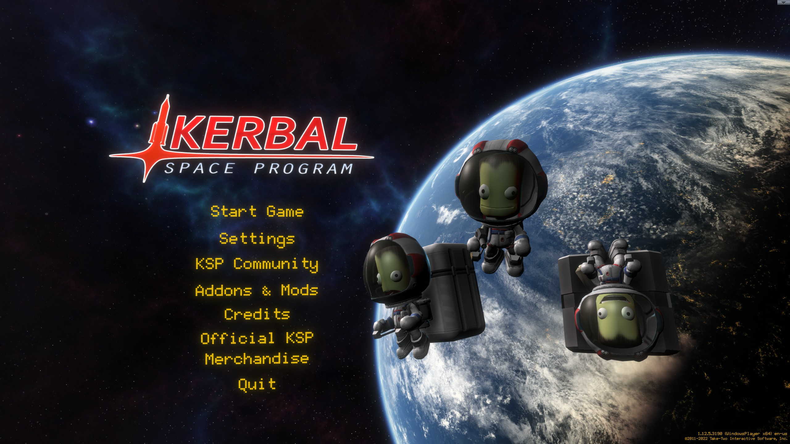

Kerbal Plus
A beginner-friendly modpack for Kerbal Space Program focused on enhancing the stock experience

A beginner-friendly modpack for Kerbal Space Program focused on enhancing the stock experience
Modding KSP can be daunting. There are hundreds of amazing mods to choose from, and it's hard to know where to start. Kerbal Plus is a modpack of essential mods designed to give you an enhanced KSP experience while still maintaining the stock feeling of the game. It's suitable for both people new to KSP and veterans looking for an enhanced experience that stays true to the spirit of the base game.
Installation is simple and only takes a few minutes. Visit the download page to see the full instructions.